4月25日08_00_4月25日18_00 zero_boundary_014 / TRAIN
点数 4；航速中位数 0.17 kn（0.11–0.25）；总功率中位数 -15.82 kW；12 簇均有原始记录 0 点；12 簇同时充电 0 点。
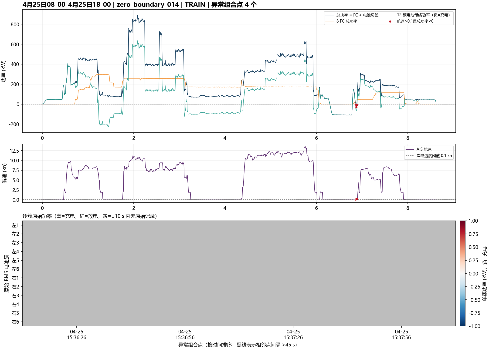
筛选口径：mode=unresolved、speed_kn>0.1、load_total_kw<0。总功率是 FC 与电池母线功率的代数和，不是独立负载测量。逐簇热图仅使用 ±10 s 内原始 BMS 记录，不对缺失值插值。
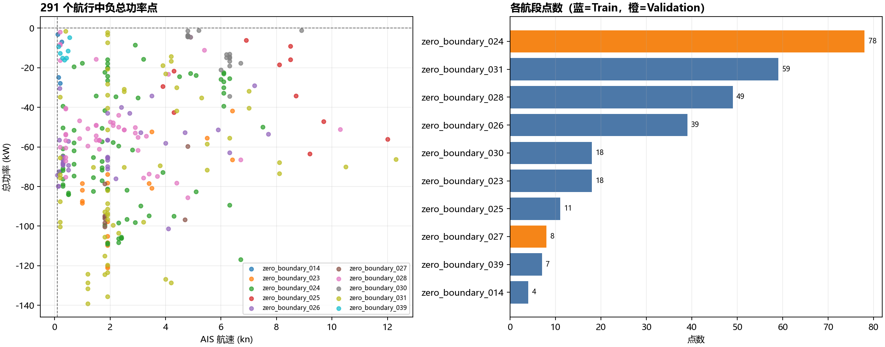
点数 4；航速中位数 0.17 kn（0.11–0.25）；总功率中位数 -15.82 kW；12 簇均有原始记录 0 点；12 簇同时充电 0 点。

点数 18；航速中位数 1.90 kn（1.00–6.40）；总功率中位数 -81.24 kW；12 簇均有原始记录 18 点；12 簇同时充电 18 点。
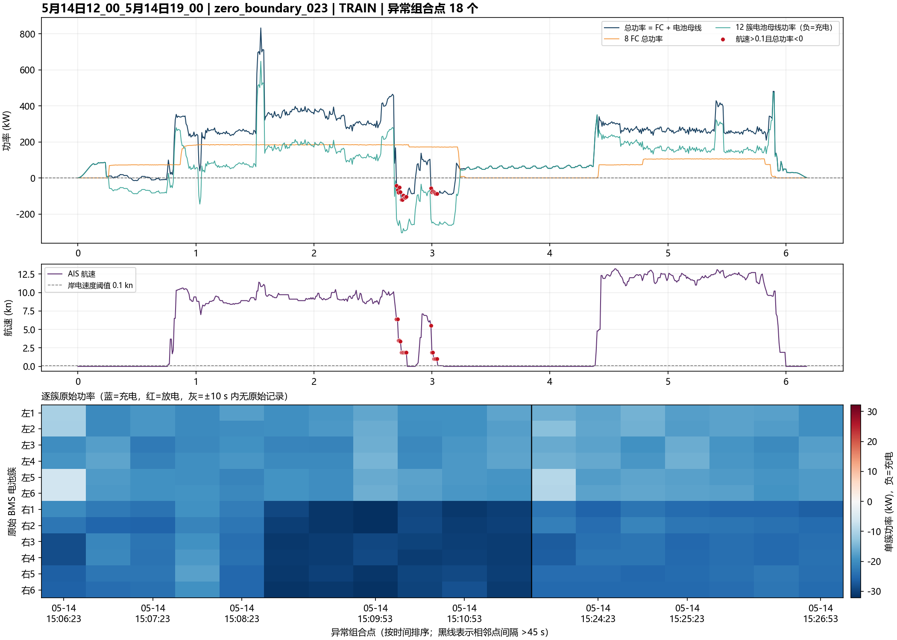
点数 78；航速中位数 1.90 kn（0.20–7.50）；总功率中位数 -64.84 kW；12 簇均有原始记录 78 点；12 簇同时充电 77 点。
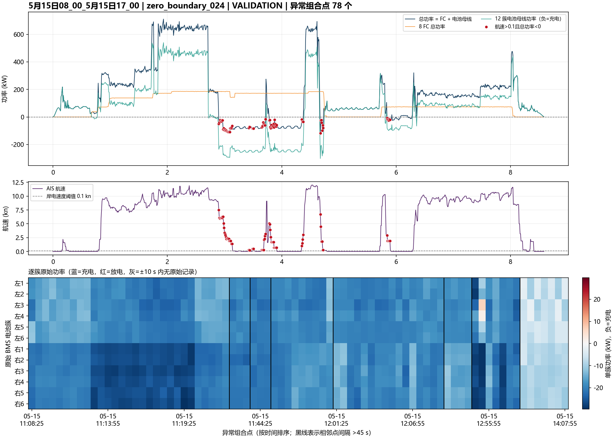
点数 11；航速中位数 8.50 kn（3.90–12.00）；总功率中位数 -29.30 kW；12 簇均有原始记录 11 点；12 簇同时充电 11 点。
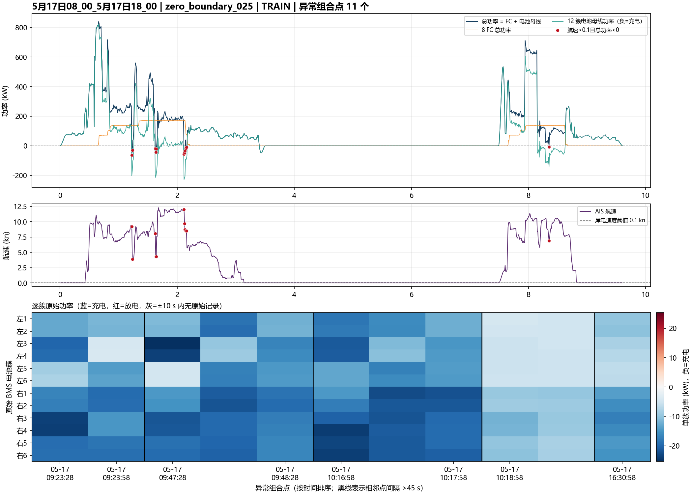
点数 39；航速中位数 1.90 kn（0.10–7.70）；总功率中位数 -65.13 kW；12 簇均有原始记录 33 点；12 簇同时充电 33 点。
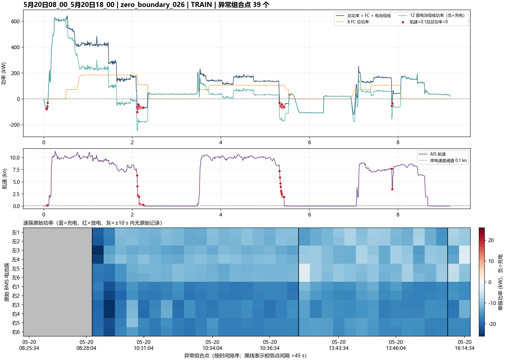
点数 8；航速中位数 1.80 kn（1.80–4.80）；总功率中位数 -95.67 kW；12 簇均有原始记录 8 点；12 簇同时充电 8 点。
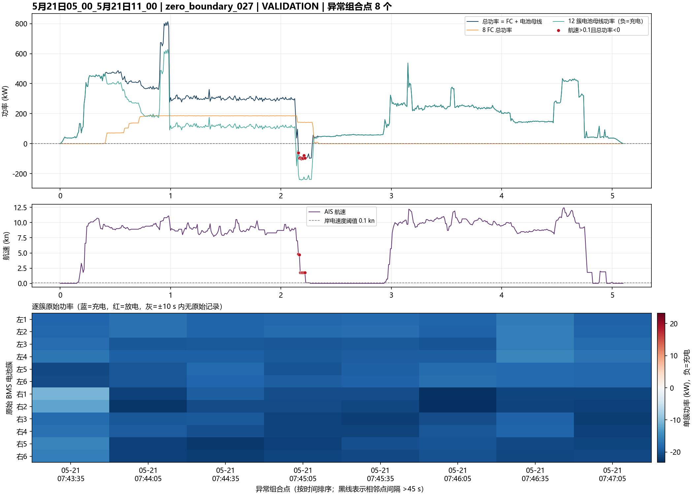
点数 49；航速中位数 1.60 kn（0.20–10.30）；总功率中位数 -53.47 kW；12 簇均有原始记录 49 点；12 簇同时充电 49 点。
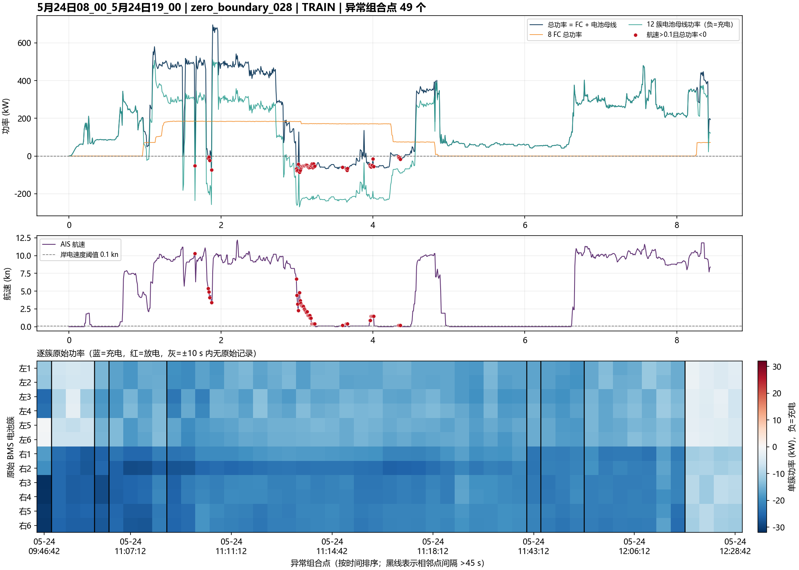
点数 18；航速中位数 6.20 kn（4.80–8.90）；总功率中位数 -13.14 kW；12 簇均有原始记录 18 点；12 簇同时充电 10 点。
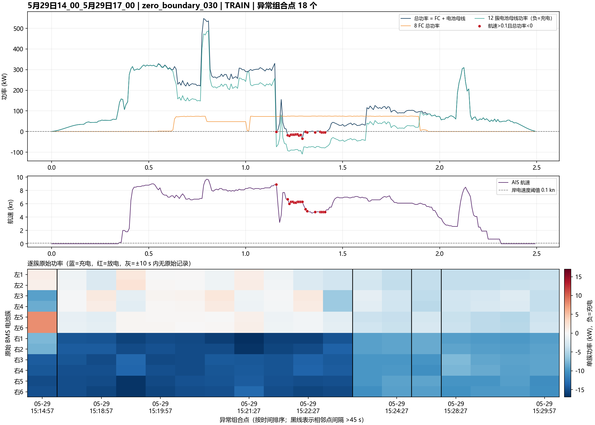
点数 59；航速中位数 1.90 kn（0.20–12.30）；总功率中位数 -70.29 kW；12 簇均有原始记录 59 点；12 簇同时充电 36 点。
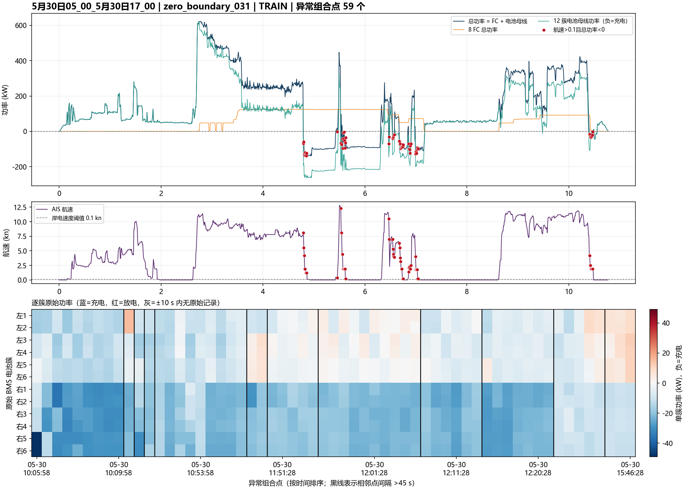
点数 7；航速中位数 0.35 kn（0.14–0.54）；总功率中位数 -12.61 kW；12 簇均有原始记录 0 点；12 簇同时充电 0 点。
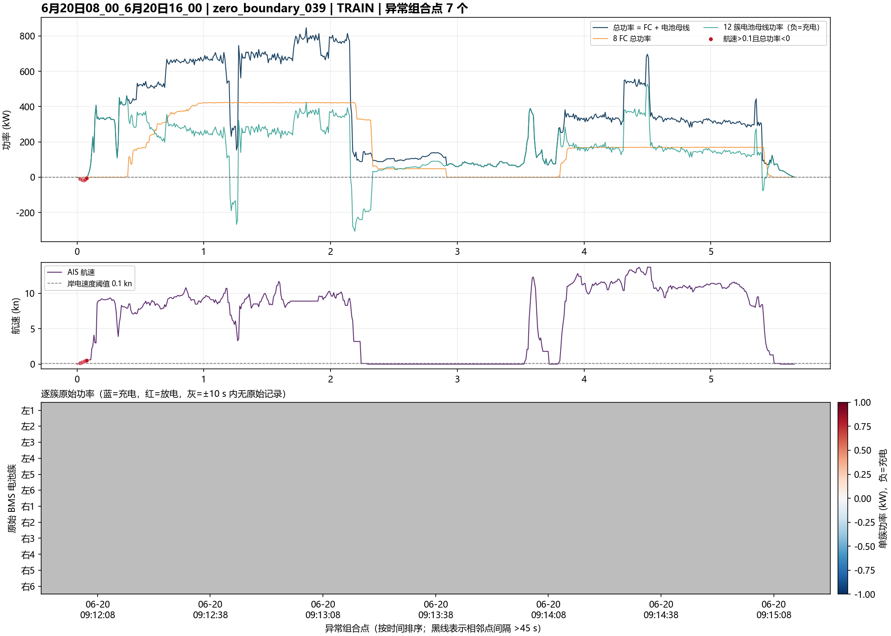